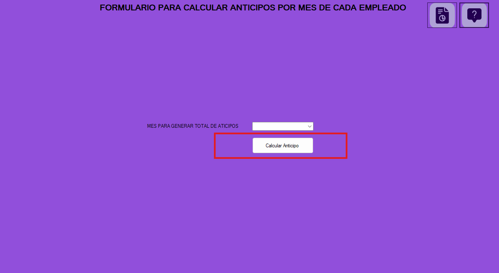
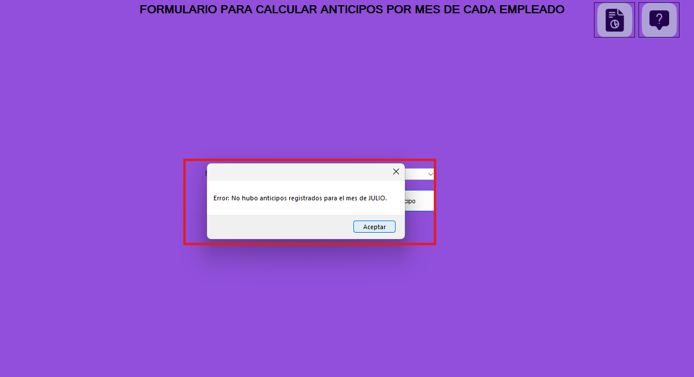

El formulario de anticipos es una interfaz que permite crear anticipos realizados en el mes, si un empleado tuvo más de un anticipo en el mes sumara los anticipos del mes para genera el anticipo completo. En caso de que en un mes no haya habido un anticipo notificará que en ese mes no hubo anticipos.

El formulario contiene los siguientes botones y opciones que permiten interactuar con los datos de las
aplicaciones de manera eficiente:
**1. Seleccionar Mes**
Descripción: Este es un seleccionardor multiple en donde se debe seleccionar el mes al cual se le desea
calcular los anticipos.
**2. Botón de Calcular Anticipo:**
Descripción: Calcula los anticipos y los manda a la tabla donde esta más a detalle las nóminas

El formulario contiene mensajes los cuales informan si la transacción fue correcta o no.
**1. Ingreso de manera correcta**
Descripción: Indica que la transacción se realizó de manera adecuada
**2. Ingreso de un mes sin anticipos**
Descripción: Si el mes que se selecciona no genero ningun anticipo, notificará que en el respectivo mes no
hubieron anticipos
